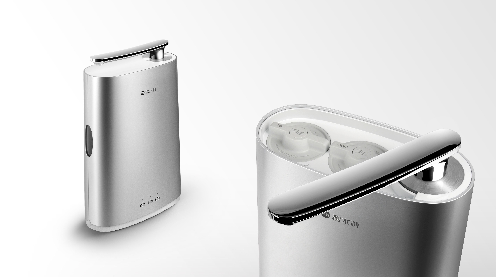
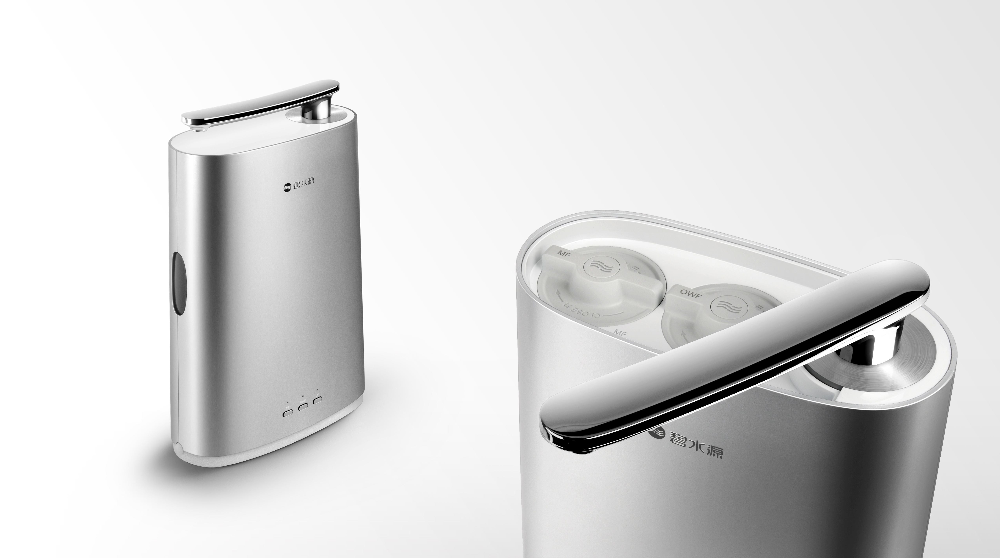

중국 벽수원 사의 직수연결형 탑싱크 정수기 디자인. 싱크대 주변의 빈 공간을 사용하여 설치하는 제품으로 기존에 판매되던 제품의 업그레이드 버전이다. 전 제품에서 있었던 불편함을 개선함과 동시에 외형적 수려함을 부여하는 작업하였다. 활처럼 살짝 휘어진 금속수전은 풍성하고 아름다운 빛 반사를 만들어내고, 납작한 원기둥 형으로 만들어진 바디에는 세척 가능한 3개의 필터가 삽입되어있어 간단한 방법의 커버제거로 필터 세척 및 교환을 할 수 있게 했다. 하단 커버는 러버로 제작하여 노즐이나 파워코드 등을 숨김과 동시에 물 배관의 좌, 우 방향 전환을 가능하게 하였으며 제품의 지지력도 우수하도록 의도하였다. 별도로 설치되는 취수 핸들은 정수와 일반수를 직관적으로 알 수 있게 하고 조작이 쉽게 하였다.
The design of direct connected type of top sink purifier from China Originwater Company It is installed using the empty space around the sink. This product is an upgraded version of the existing one to improve inconveniences and the design shape. The metal curved faucet which looks like a bow makes rich and beautiful light reflections. The flat cylindrical body has been inserted with three filters which are able to clean, so with easy way to remove the cover and possible to clean them and change the filters. The bottom part of the cover has made into a rubber to hide nozzle or power code and change a direction to any ways for the pipe and also has been intended the bearing power well itself. The water intake handle which has separately been installed has made for purifier water and normal intuitionally and easy to control.
 
